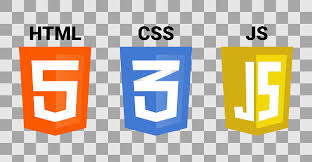

Skills
 I have a solid understanding of MySQL, including experience in designing and optimizing relational databases, writing complex SQL queries, and ensuring data integrity. My skills include creating and managing tables, using indexes for performance optimization, and handling transactions and stored procedures to improve efficiency in database operations. I’m also proficient in integrating MySQL with web applications and ensuring data security and scalability.
I have a solid understanding of MySQL, including experience in designing and optimizing relational databases, writing complex SQL queries, and ensuring data integrity. My skills include creating and managing tables, using indexes for performance optimization, and handling transactions and stored procedures to improve efficiency in database operations. I’m also proficient in integrating MySQL with web applications and ensuring data security and scalability.-
 I’m a beginner in Python, currently focused on mastering the basics like variables, data types, and functions. As I progress, I’m diving into more advanced topics like object-oriented programming and automation. My goal is to apply Python in real-world projects, particularly in data engineering, to solve complex problems and automate tasks efficiently.
I’m a beginner in Python, currently focused on mastering the basics like variables, data types, and functions. As I progress, I’m diving into more advanced topics like object-oriented programming and automation. My goal is to apply Python in real-world projects, particularly in data engineering, to solve complex problems and automate tasks efficiently.
-  I’m gaining experience in web development, with a focus on HTML, CSS, and JavaScript. I’m learning to build responsive and visually appealing websites, utilizing HTML for structure, CSS for design, and JavaScript for interactivity. As I continue to develop my skills, I aim to create dynamic web applications and improve user experiences through effective design and functionality.